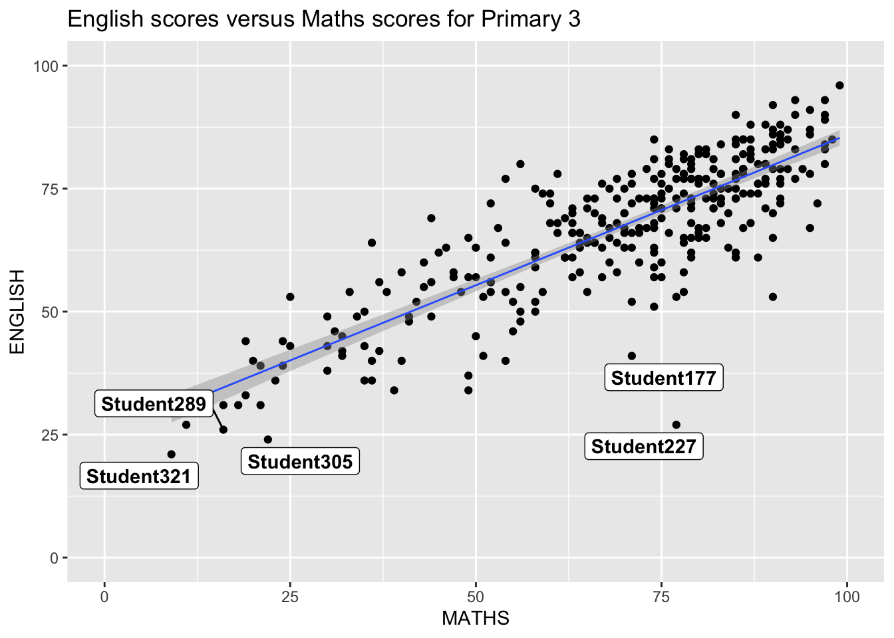
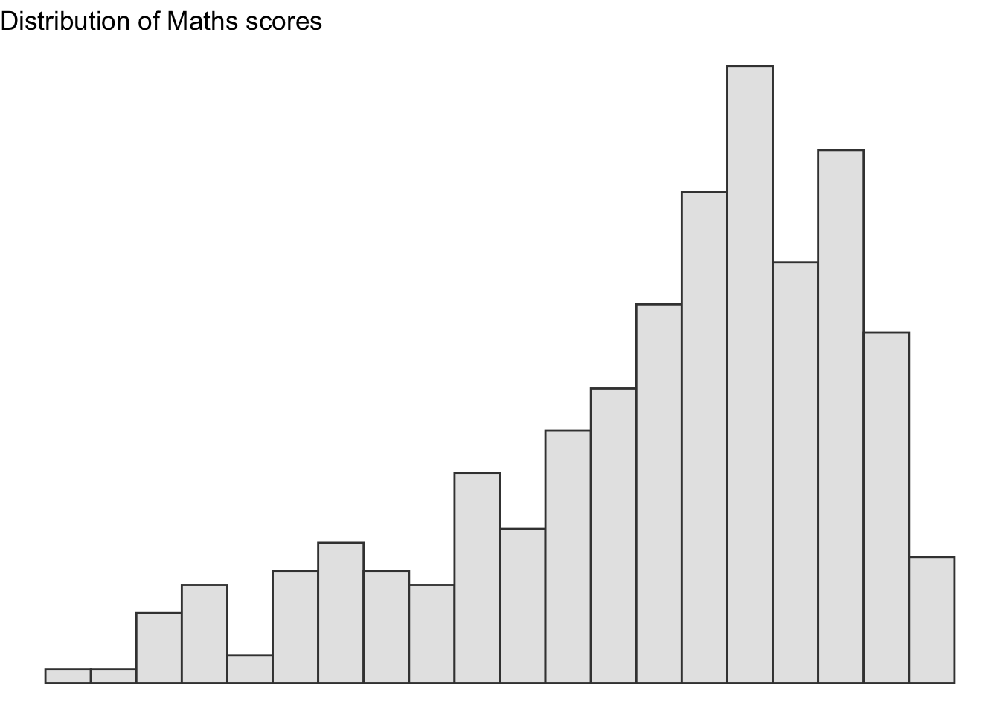
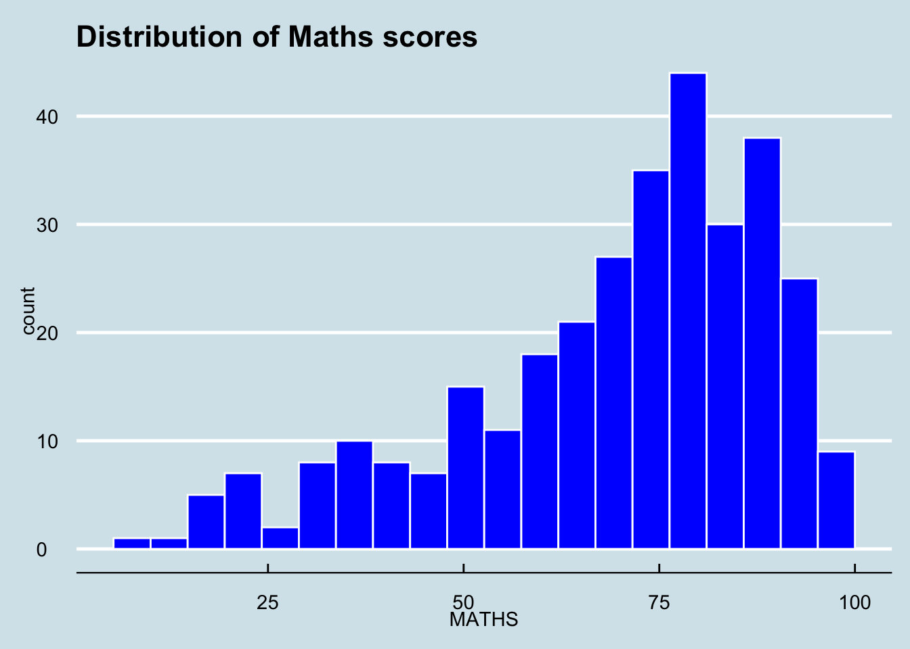
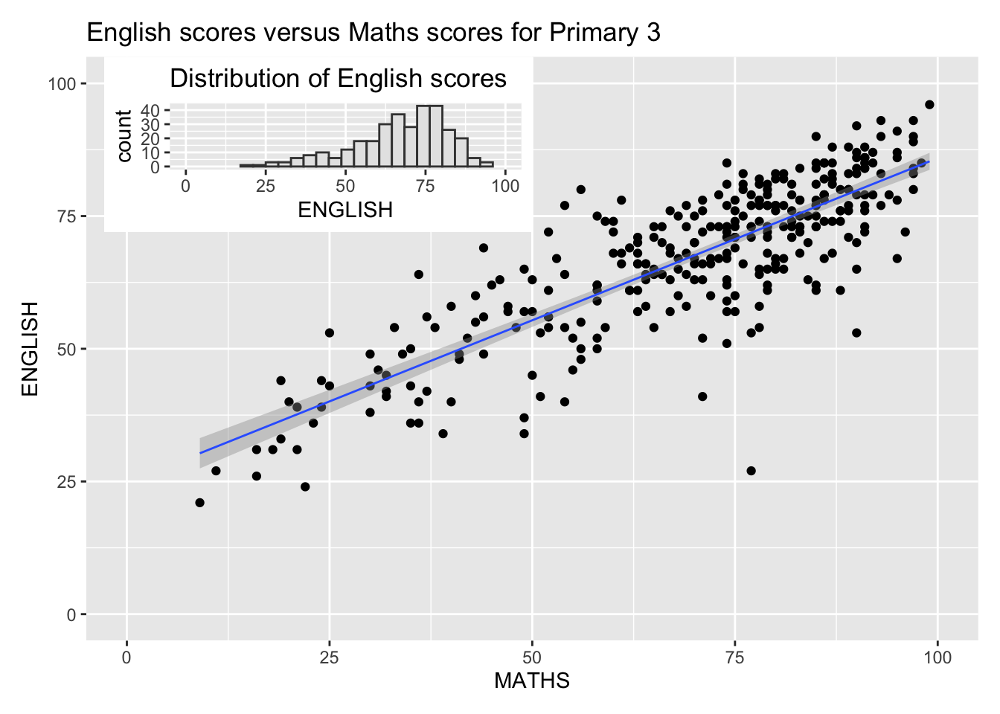
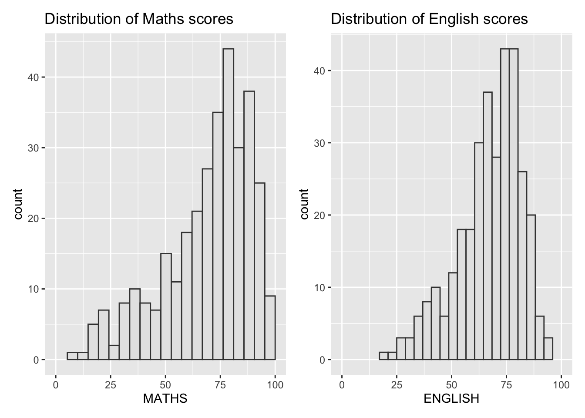
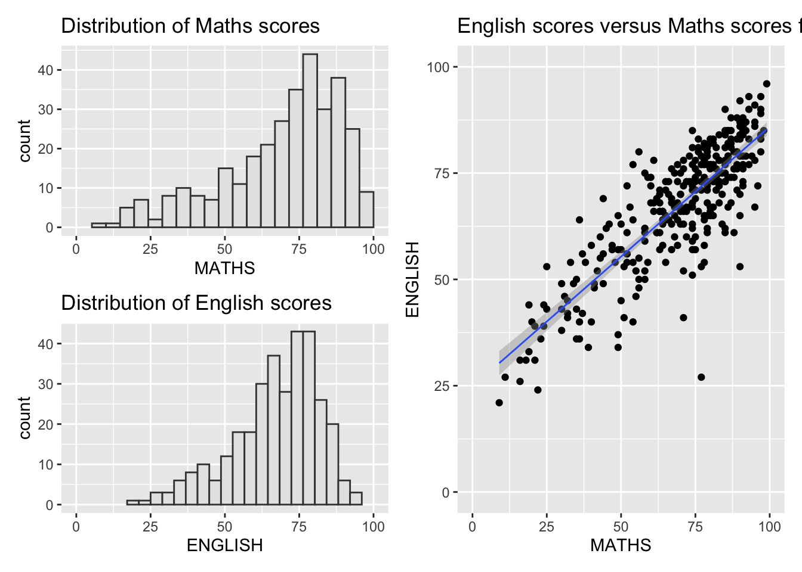
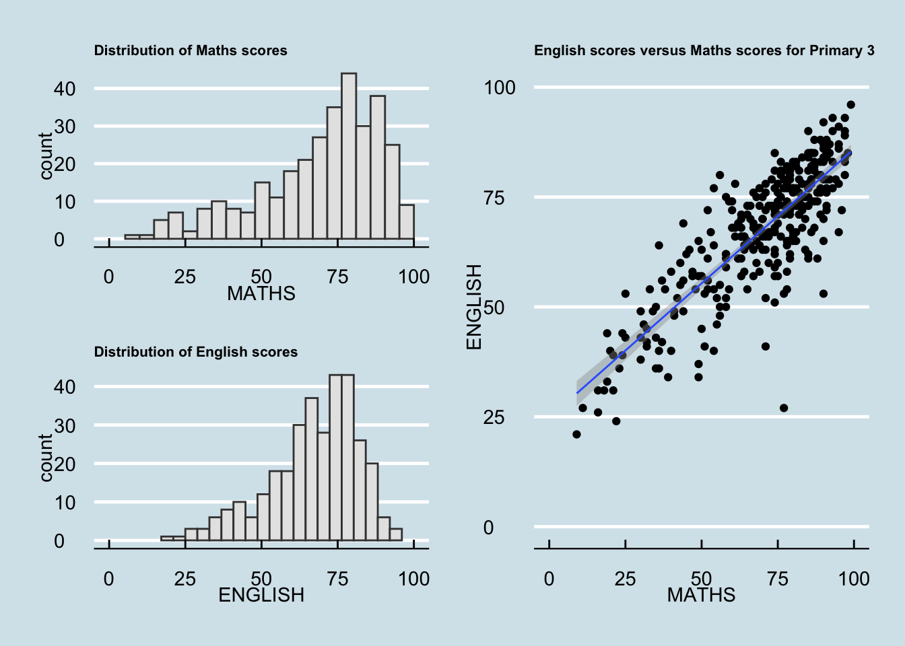

pacman::p_load(ggrepel, patchwork,
ggthemes, hrbrthemes,
tidyverse) Hands-on Exercise 2: Beyond ggplot2 Fundamentals
2 Beyond ggplot2 Fundamentals
2.1 Getting Started
2.1.1 Installing and loading the required libraries
In this workshop, we will learn the following libraries.
ggrepel: an R package provides geoms for ggplot2 to repel overlapping text labels.
ggthemes: an R package provides some extra themes, geoms, and scales for ‘ggplot2’.
hrbrthemes: an R package provides typography-centric themes and theme components for ggplot2.
patchwork: an R package for preparing composite figure created using ggplot2.
The below code chunk is to check if each package is installed.
If not, it will install it automatically, and then load all packages into session. So it replaces multiple install.packages() + library() calls.
2.1.2 Importing data
The code chunk below uses readr to import Exam_data.csv.
exam_data <- read_csv("data/Exam_data.csv")2.2 Beyond ggplot2 Annotation: ggrepel
The code chunk uses ggplot to generate a scatter plot. While it shows the relationship between English scores and Maths scores for Primary 3 students, we may find it difficult to annotate nicely due to the large data points. geom_label() places labels directly on the plot at the specified coordinates.

ggplot(data=exam_data,
aes(x= MATHS,
y=ENGLISH)) +
geom_point() +
geom_smooth(method=lm,
size=0.5) +
geom_label(aes(label = ID),
hjust = .5,
vjust = -.5) +
coord_cartesian(xlim=c(0,100),
ylim=c(0,100)) +
ggtitle("English scores versus Maths scores for Primary 3")2.2.1 Working with ggrepel
geom_label_repel() uses a smart algorithm to “repel” labels away from each other and from points. It greatly reduces overlap, making the plot more readable.

ggplot(data=exam_data,
aes(x= MATHS,
y=ENGLISH)) +
geom_point() +
geom_smooth(method=lm,
size=0.5) +
geom_label_repel(aes(label = ID),
fontface = "bold") +
coord_cartesian(xlim=c(0,100),
ylim=c(0,100)) +
ggtitle("English scores versus Maths scores for Primary 3")2.3 Beyond ggplot2 Themes
ggplot2 can provide eight built-in themes. Each theme changes the overall look and feel of plot, mainly by adjusting background, grid lines, and axis styling.
| Theme | Style | Use Case |
|---|---|---|
| theme_gray() | Default ggplot2 theme. Grey background with white grid lines. | Good for general use. |
| theme_bw() | White background with black grid lines. | Clean and professional, often used for publications. |
| theme_classic() | Minimal background, only axes lines. | Great for simple, traditional plots. |
| theme_dark() | Dark background with light grid lines. | Useful for presentations or dashboards. |
| theme_light() | Light background with subtle grid lines. | Softer than theme_bw, good for readability. |
| theme_linedraw() | White background with thin black lines. | Precise, technical look. |
| theme_minimal() | Very clean, minimal grid lines. | Popular for polished reports and slides. |
| theme_void() | Removes all background, axes, and grid lines. | Perfect for maps or custom layouts. |
The code chunk uses theme()_gray() to draw a histogram with a neutral grey background, clear grid lines, and evenly spaced bins showing how Maths scores are distributed across students.

ggplot(data=exam_data,
aes(x = MATHS)) +
geom_histogram(bins=20,
boundary = 100,
color="grey25",
fill="grey90") +
theme_gray() +
ggtitle("Distribution of Maths scores") Let’s try out with other themes.
ggplot(data=exam_data, aes(x = MATHS)) +
geom_histogram(bins=20, boundary=100,
color="grey25", fill="grey90") +
theme_minimal() +
ggtitle("Distribution of Maths scores")
ggplot(data=exam_data, aes(x = MATHS)) +
geom_histogram(bins=20,
boundary = 100,
color="grey25",
fill="grey90") +
theme_void() +
ggtitle("Distribution of Maths scores")
2.3.1 Working with ggtheme package
ggthemes package extends ggplot2 with a wide variety of additional themes that mimic the visual styles of well-known publications, software, and visualization experts.
| Theme (from ggthemes) | Style Inspiration |
|---|---|
| theme_tufte() | Edward Tufte’s minimalist design — very clean, data-focused, minimal ink. |
| theme_few() | Stephen Few’s practical, uncluttered style for dashboards and business charts. |
| theme_fivethirtyeight() | The distinctive look of FiveThirtyEight’s data journalism plots. |
| theme_economist() | Mimics The Economist magazine’s charts — professional, polished, with signature colors. |
| theme_stata() | Replicates Stata’s default plotting style. |
| theme_excel() | Recreates the look of Microsoft Excel charts. |
| theme_wsj() | The Wall Street Journal’s chart style — clean, financial-report oriented. |
It’s especially useful when you want your plots to look like they came from a specific source or design tradition.
theme_economist() applies a distinctive blue-gray background, subtle grid lines, and a professional style that mirrors The Economist’s charts.

ggplot(data=exam_data,
aes(x = MATHS)) +
geom_histogram(bins=20,
boundary = 100,
color="grey25",
fill="grey90") +
ggtitle("Distribution of Maths scores") +
theme_economist()If we want to push the style further, we can also use scale_color_economist() or scale_fill_economist() to apply The Economist’s color palette to our bars or points.
ggplot(data=exam_data, aes(x = MATHS)) +
geom_histogram(bins=20, boundary=100,
color="white", fill="blue") +
ggtitle("Distribution of Maths scores") +
theme_economist() +
scale_fill_economist()
2.3.2 Working with hrbthems package
The hrbrthemes package is all about typography and presentation polish in ggplot2. While ggthemes focuses on mimicking well-known publication styles, hrbrthemes emphasizes readability and typographic quality.
Key Features of hrbrthemes
Base theme (theme_ipsum()): A clean, modern theme with carefully chosen fonts, spacing, and label placement.
Font control: Lets you easily use system fonts or Google fonts for titles, labels, and annotations.
Better defaults: Adjusts margins, axis placement, and text sizes to improve readability.
Variants: Includes specialized versions like theme_ipsum_ps(), theme_ipsum_rc(), etc., tailored for different font families.
Compared to ggthemes, hrbrthemes is less about mimicking external styles and more about making your plots look polished and readable by default.

ggplot(data=exam_data,
aes(x = MATHS)) +
geom_histogram(bins=20,
boundary = 100,
color="grey25",
fill="grey90") +
ggtitle("Distribution of Maths scores") +
theme_ipsum()hrbrthemes vignette emphasizes that its real strength is in a production workflow. The idea is that when you’re generating plots repeatedly (for reports, dashboards, or stakeholder-ready deliverables), you don’t want to manually tweak fonts, margins, and label placement every single time.

ggplot(data=exam_data,
aes(x = MATHS)) +
geom_histogram(bins=20,
boundary = 100,
color="grey25",
fill="grey90") +
ggtitle("Distribution of Maths scores") +
theme_ipsum(axis_title_size = 18,
base_size = 15,
grid = "Y")2.4 Beyond Single Graph
When you’re telling a visual story, a single chart often isn’t enough. ggplot2 itself doesn’t have built-in functions for combining multiple plots, but there are excellent extensions that make this easy.
Let’s start with drawing P1, P2 and P3, and later we can try to combine them with customization.
P1: Use ggplot to draw a histogram

p1 <- ggplot(data=exam_data,
aes(x = MATHS)) +
geom_histogram(bins=20,
boundary = 100,
color="grey25",
fill="grey90") +
coord_cartesian(xlim=c(0,100)) +
ggtitle("Distribution of Maths scores")
print(p1)P2: Use ggplot to draw a histogram

p2 <- ggplot(data=exam_data,
aes(x = ENGLISH)) +
geom_histogram(bins=20,
boundary = 100,
color="grey25",
fill="grey90") +
coord_cartesian(xlim=c(0,100)) +
ggtitle("Distribution of English scores")
print(p2)P1: Use ggplot to draw a scatterplot

p3 <- ggplot(data=exam_data,
aes(x= MATHS,
y=ENGLISH)) +
geom_point() +
geom_smooth(method=lm,
size=0.5) +
coord_cartesian(xlim=c(0,100),
ylim=c(0,100)) +
ggtitle("English scores versus Maths scores for Primary 3")
print(p3)2.4.1 Creating Composite Graphics: pathwork methods
Common approaches to composite plots
gridExtra: Functions like grid.arrange() let you place multiple ggplot objects side by side or in a grid.
cowplot: Designed for publication-ready layouts. It has plot_grid() for arranging plots and ggdraw() for annotations.
patchwork: The most modern and intuitive — you can literally use +, /, and | operators to combine plots like math expressions.
2.4.2 Combining two ggplot2 graphs
Figure in the tabset below shows a composite of two histograms created using patchwork. Note that the syntax used to create the plot is very simple.

p1 + p22.4.3 Combining three ggplot2 graphs
We can plot more complex composite by using appropriate operators. For example, the composite figure below is plotted by using:
“/” operator to stack two ggplot2 graphs, “|” operator to place the plots beside each other, “()” operator the define the sequence of the plotting.

#｜ fig-width: 12
#｜ fig_height: 8
(p1 / p2) | p32.4.4 Creating a composite figure with tag
In order to identify subplots in text, patchwork also provides auto-tagging capabilities as shown in the figure below.

#｜ fig-width: 12
#｜ fig_height: 8
((p1 / p2) | p3) +
plot_annotation(tag_levels = 'I')2.4.5 Creating figure with insert
Beyond arranging plots side by side, patchwork also lets you overlay plots using inset_element(). This is powerful when you want to highlight a smaller chart inside a larger one, or add contextual information without breaking the main layout.

#｜ fig-width: 12
#｜ fig_height: 8
p3 + inset_element(p2,
left = 0.02,
bottom = 0.7,
right = 0.5,
top = 1)2.4.6 Creating a composite figure by using patchwork and ggtheme
Figure below is created by combining patchwork and theme_economist() of ggthemes package discussed earlier.

#｜ fig-width: 12
#｜ fig_height: 8
patchwork <- (p1 / p2) | p3
patchwork & theme_economist() &
theme(
plot.title = element_text(size = 8, face = "bold", margin = margin(b = 5)),
plot.subtitle = element_text(size = 10),
plot.caption = element_text(size = 9)
)